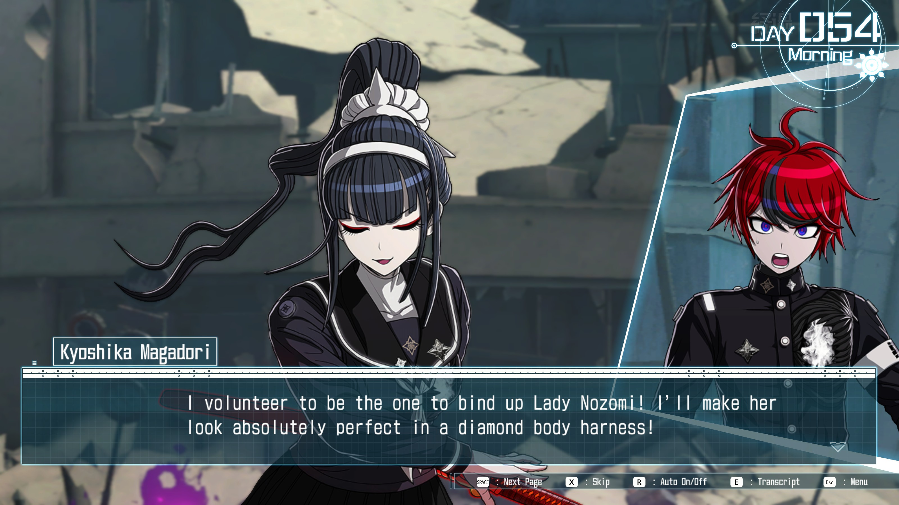

So. I'm actually writing this. I've been thinking about writing this for a while now, but I assumed it'd just remain a thought. I doubt I'll publish this, but in case I do, um... hi. You're in for whatever the opposite of a treat is. A taert? I don't know.
First thing you should know: I'm a horrible writer. I've always sucked at writing. I'll also likely be rambling on randomly and not stay on topic.
So. Anyway. What was I going to talk about? Oh, right, Hundred Line. I have some thorts™ about some of the branching nature of this game, and how the branches seem to have been written.
Okay, but why am I writing this? Alright, time to publicly embarrass myself. I'm mad that a character died. I should really know better than to expect something else from Kodaka at this point, but I keep falling for it. It'd be nice if it didn't trigger a depressive episode again, but what can you do.
(insert picture of Lucy holding the football for Charlie Brown here)
(unfortunately I couldn't find a good one)
Now I know what you're thinking. "You're just coming up with some points post-hoc to justify your anger. You wouldn't think that way if the opposite occurred."
Yup. Yep. Uh-huh. You're 100% correct, hypothetical reader. That is exactly what is happening here. That's right, it's time for...
Yup, I'm about to say a bunch of things that I wouldn't be saying otherwise if the game was written differently. And yes, I am basically complaining that the game wasn't written the way I wanted. But who knows, maybe I might come up with a point that's actually interesting.
Also note that I'll probably be updating this over time. I just wanted to post something asap, even if it isn't done.
Anyway, from here on out, spoilers for the general structure of Hundred Line and specific spoilers for certain routes and decisions. Also maybe some spoilers for Danganronpa 1/2/V3.
Note that I have not played all branches (I only have 30 endings so far* (edit: up to 54ish now)), but I have looked at guides on how to get all possible endings, so I know the general structure.
In case you haven't played Hundred Line and just want to get the gist of it: you can look up the synopsis from any listing for the game. Basically, you have to defend this academy for 100 days, after which, something happens. You don't have any choices during these 100 days, so there's a set path. Except then you go back in time to try and do things over. This second run through there are A LOT of choices. Depending on the choices you take, there are 100 possible endings. But the thing is... those choices aren't always weighted equally. Sometimes this makes perfect sense; making a terrible choice can easily lead you to a quick ending. However, it becomes an issue when a more-or-less equal choice has incredibly lopsided outcomes. Like, let's say one option leads to 2 possible endings, while the other leads to 40 possible endings.
However, there is a reason why this is. There is one "main" route (ending 1), and the other routes essentially branch off from it. While this isn't necessarily a problem, it does mean that there are times when you can tell that the story was written expecting you to make a certain decision. This is especially galling when making the ""wrong"" choice leads to an obvious choice point, but then the game just makes the choice for you.
To be fair, I think part of this is part of the game's design philosophy: the writers didn't want there to be routes that are efffectively the same, just with one character swapped out for another. If they did this, it would feel like filler for getting to 100 endings. Alternatively, they could have made more than 100 endings, but just label the ones at the swap ending 1A/1B, etc...
So. Anyway. Kyoshika Magadori. My favourite character in the game. You've probably already figured out why I'm mad about this based on what I've written so far. On Day 15 of the main route, you have to choose from one of three Characters to sacrifice themself to detonate a bomb: Takemaru, Tsubasa, or Kyoshika.
Part of my issue with this choice is that the game isn't really interested in why you would choose one character over the other (at least as far as I've seen so far). For a lot of people playing the game for the first time, I imagine they'd just sacrifice whichever character they like less. But you could also view it as a value judgement:
Who would you sacrifice: Someone who's had a (relatively) normal and fulfilled life, or someone
who's lived almost completely isolated from society and hasn't had much of a childhood (hell, she
was so lonely she turned her sword into an imaginary friend with benefits). Now, obviously I'm putting
my thumb on the scale with those descriptions, but I still think they're somewhat applicable.
What's annoying is that the game doesn't seem to acknowledge this; if you choose to sacrifice
Takemaru, his only reasoning for being picked over Kyoshika is that she's a girl. While this is
very much in line with Takemaru's personality and thought processes, it's also kind of insulting
to Kyoshika. Honestly, it probably would have been better if Takemaru wasn't an option to sacrifice;
it would make more sense for Kyoshika to be the "canonical" choice. (It doesn't help that the only
route you can get from sacrificing Takemaru is the Sex Cult route, which is kinda insulting).
Like, you choose not to sacrifice Kyoshika because you want her to value herself and make genuine friendships, and instead you get the route where everyone loses their minds and can't think of anything other than boning Takumi. I fucking hate it (i.e. I hate that this series of choices leads to this route; I have... mixed feelings on the route itself). I also hate that they clearly could have put a branch to another route here (by rejecting Yugamu's sex pills), but they didn't. I guess they needed more endings for the (checks list) "Conspiracy" route and the "Box of Blessings" route.
Okay, back to the point about the game not really being interested in the reasonings for one's choice.
In the V'ehxness route, Tsubasa (and the game, by extension, I think? I'd have to play the whole route
over again) doesn't consider the possibility that the reason Takumi/the Player chose her was that they
believed she wouldn't be able to go through with it, as a roundabout way of avoiding sacrificing anyone.
I decided after a bit that this point isn't very good.
I guess you could also make the choice kind of a metatextual one? Like, do you prioritize narrative tightness or thematic coherence. I don't know; I've always been terrible at this stuff.
It's kind of odd to not have her in the route for ending 1, considering that that route (apparently) focuses on the Flaming Boy (Shion). In the routes I've played so far, the two don't have much interaction, despite their similar backgrounds, being raised isolated from anyone else.
Also Kyoshika's sacrifice scene is pretty much a copy of Tenko's death from V3 and Peko's death from 2. Basically, a character with low self-worth dies/sacrifices herself and isn't appreciated by the other characters until after/just before her death. They're the kind of characters that Kodaka loves killing for pathos, instead of seeing them handle their failures. (yes I'm still mad about Tenko's death 8 years later).
Okay, now the point I can't justify, even to myself. Honestly, my favourite Kyoshika moments
are the parts where she's suffering. ...okay, maybe that makes it sound a little worse than
I what I mean, but one of my favourite moments is when Kurara sacrifices herself to save
Kyoshika in the Zombie route. It's a great moment for both of them: Maskless Kurara overcomes
her timidity to save her girlfriend, while Kyoshika has to reckon with someone she
loves sacrificing herself to save her. I want more moments like that. I have my issues with the
zombie route, but that moment was worth it.
Hell, the weird sadist in me likes seeing my favourite characters survive, but suffer a lot along the way. Honestly, that's why I'm not too interested in some of the "everyone survives" endings. I'd love a alternate version of (at least some of) endings 1-40 where you save Kyoshika instead of Takemaru, but I know that's unreasonable. Now that I've watched what happens in ending 1, it would be roughly the same to have Kyoshika in place of Takemaru, but you could make it interesting if you had Kyoshika take the place of Takumi instead. It'd be a great inversion of what happens on day 15; instead of sacrificing herself to save everyone else, she'd have to sacrifice everyone else to carry out their will. If she survived it, she could start a family with Nozomi and Kamyuhn (or however you spell her name).
Well who knows. Maybe they'll release some DLC with more routes (they won't). Oh come on, I can dream (no you can't). I mean, that would be the smart way to ensure that not everything is spoiled immediately right? Not releasing the whole game at the start (you're being delusional). But surely it would be an easy way for them to make more money without having to make a whole new game (you're underestimating the amount of work it takes).
Alright, I finished some more routes and endings. Including the SF route and some other stuff. I got partway through the Killing Game route, up to around day 58ish. If you've played the route you can guess why. Being a Kyoshika stan is suffering.
Anyway, this route has another Kyoshika sacrifice (big surprise). But, uh... I do sort of notice a trend in how Kyoshika's sacrifices are treated vs. how the moments where others sacrifice themselves for her. Anytime someone else sacrifices themself for Kyoshika, it's a very sudden decision. This never leaves Kyoshika with enough time to talk through her emotions with the other person in question. On the other hand, whenever Kyoshika wants to sacrifice herself (except ending 75), she always explains that she's completely prepared to die for anyone. No one ever rebuts her desire to die by pointing out they're just as willing to die for her (even though both Takumi and Kurara are clearly willing to do so in other routes). Hell, no one expresses why they love her and want her to survive. She never gets the chance to process how others feel about her. Outside of the Romance Route, she never brings up that she's basically been alone her whole life and has no one left to return to on the satellite. It would be an interesting moment for her to bring that up as a reason why she should die, only for it to backfire completely on her.
It's especially odd not to bring this up in the Killing Game route, which touches on Darumi's willingness to die and fucked-up home life, as well as Nozomi's shitty relationship with her mother. It's especially poignant with Nozomi, considering a lot of her relationship with Eva in this route is about realising how much her mother used her without reciprocating her love.
You could easily do that in the route by having Takumi, Yugamu, or even Tsubasa forefeit their points so that Kyoshika would no longer be on the bottom of the leaderboard. If Takumi were to forefeit his points, the route could continue on from either Nozomi or Kyoshika's point of view.
If you wanted the routes to diverge more but don't want to do the "forefeit points" thing, you
could have Tsubasa intentionally fall to last place for Kyoshika's sake. It would make sense
from her development's point of view, since earlier in the route she laments not being
able to help Hiruko. It would also make the route diverge more, since they wouldn't be able
to repair the rocket or construct the baby jar; they'd have to find some other way to stop
the missile attack. e.g. maybe Kyoshika's hemoanima allows her to absorb Shion while
keeping his mind separate/intact. Also maybe have them ally with the Futurians to end
the Invader Hunt, since there's no rule about non-participants attacking the sponsor.
You could have Kyoshika offer some of her blood to one of the
commanders (probably Dahl'xia) to share her memories as proof of her intentions.
And then of course you could make another swordfucking joke.
Oh yeah, and also it would be a good time for a persuasion minigame for Kyoshika, since it would be (slightly) different to have one just about valuing yourself. The thing is, the correct answers couldn't be extrinsic things, e.g. "We need you because only you can...".
e.g. the correct answers would be things like:
"You're more than just what makes you useful."
"You don't need to suppress your emotions to make us feel better."
I mean c'mon. Are you really gonna tease us by having Kyoshika fantasize about putting Nozomi in bondage and not explore their relationship more? (yes they will. obviously) shut up i need this.
So far, the endings I have are (in order of getting them):
42 41 47 63 64 65 67 68 66 62 61 43 44 70 69 75 76 74 73 71 72 46 48 45 93 98 97 78 77 79 80 81 82 83 84 36 34 35 100 56 53 54 55 60 59 99 58 57 92 91 90 89
I probably forgot to write down a few of the short endings I got along the way.